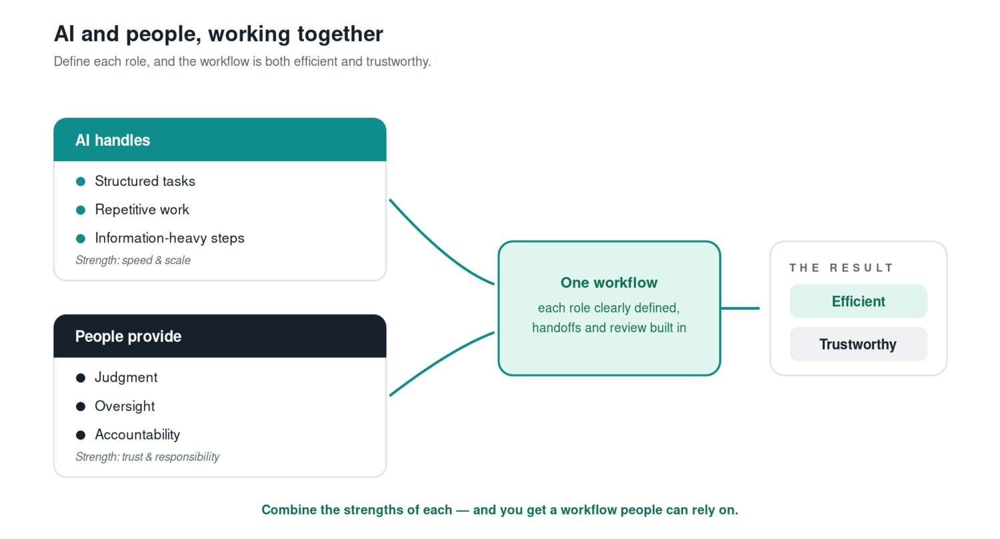
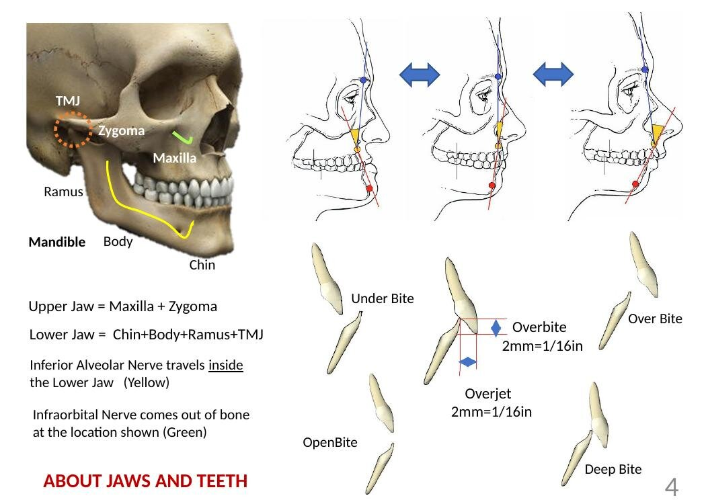

Alex Donnelly
Litigation Visual Strategy · Biomedical Visualization · AI Enablement
Highland Park, IL · (847) 338-8208 · a.james.donnelly@gmail.com · linkedin.com/in/alexjdonnelly
I take complicated legal, medical, and technical information and work out how to make it understandable and usable.
That problem shows up in trial demonstratives, in patient education, in adopting new technology, and in research on how people actually understand complex evidence. My work draws on fifteen years inside litigation, graduate training in fine art and biomedical visualization, and current research into 3D-printed anatomical models and juror comprehension.
Selected Work

AI Adoption & Assistance
Helping a law firm evaluate, pilot, and adopt generative-AI tools, and building the workflows, guides, and training that make adoption real.
View →
Research — 3D Printing & Data Segmentation
Graduate research on whether patient-specific 3D-printed models help jurors and patients understand complex surgical anatomy.
View →
Medical Illustration & Trial Demonstratives
Turning surgical procedures, medical devices, and complex evidence into clear, accurate visuals for non-expert audiences.
View →
College of Medicine & Health Communication
Patient-education and clinical communication design, including a jaw-surgery manual for the UIC Craniofacial Center.
View →How I Work
The same approach across every medium
Background
Most of my visual and communication capability was built from inside litigation. Over more than a decade at the Law Offices of Michael M. Mulder, I developed firm communications, presentations, diagrams, timelines, and website and brand materials because the work needed to be done. That experience is what led me to graduate training in visual art and biomedical visualization, and to the work on these pages. A full account of my litigation and firm-operations experience is on my résumé.